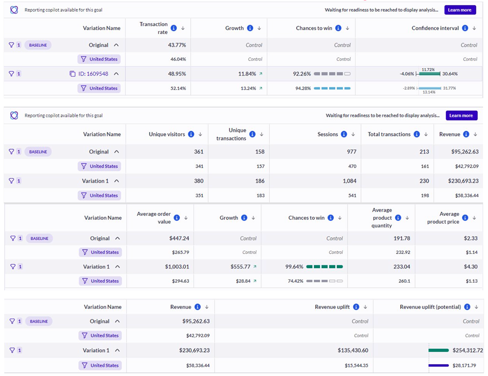

"No dedicated designer. No dedicated developer. Zero initial leadership buy-in — and significant revenue potential going untapped."
National Pen's microsite powered high-stakes email and direct mail campaigns — but had been entirely neglected from a design standpoint. No dedicated designer. No dedicated dev. No stakeholder priority. Despite driving real traffic, it was converting poorly and nobody owned the problem.
The main site's checkout flow was a separate project with a dedicated design team — but one I wasn't on. The microsite was my entry point: a constrained, under-resourced platform where I could operate independently, prove a hypothesis, and generate the evidence needed to advocate for the larger opportunity.
My role on the microsite wasn't just to design — it was to create the conditions for design to matter at all. If the results were strong enough, they'd open the door to the main checkout.
The microsite had two fundamentally different failure modes depending on device — and both had to be understood before any design work began. I ran a structured UX audit across three methods, synthesized through two workshops with PM + Tech and a final stakeholder alignment session.
Hotjar session data showed high abandonment rates throughout the mobile funnel — driven by too many steps, too much friction at each one, and a UX that had been designed for desktop and never adapted. Mobile users were navigating a multi-tab, multi-step flow never intended for a small screen.
Desktop had meaningfully less friction than mobile, but one critical structural flaw: the primary CTA was buried far below the fold. Users who completed product customization had to scroll past a long page of already-filled information before reaching the action they came to take.
Applied NNG's 10 Usability Heuristics against the full microsite flow, mapping violations directly against screens in Figjam. Four compounding violations emerged across the checkout arc.
Hours of session recordings, heatmaps, and direct user survey feedback surfaced where attention dropped, where rage-clicks occurred, and which steps had the highest exit rates.
Benchmarked against comparable promotional product experiences to establish what a low-friction one-page checkout could look like — and where the microsite fell short by comparison.
Audit findings were workshopped with PM + Tech first, then escalated to a full stakeholder session — converting heuristic violations and behavioral data into a shared, prioritized design direction.
Four violations were compounding across the checkout arc — identified using Nielsen Norman Group's 10 Usability Heuristics, cross-referenced with Baymard Institute research and Hotjar behavioral data.
Users had no reliable way to track their progress through the 8-page checkout. Without a clear position indicator, fatigue-based abandonment was high — people couldn't see the end, so they left. The fix was structural, not cosmetic: the flow itself had to be compressed.
The "Place Order" CTA was placed in a position on mobile where users accidentally triggered it while scrolling — a tap-target problem with real financial consequences. Rage-click data from Hotjar session recordings validated this pattern across device types and sessions.
Each page was dense with pre-filled information users had already provided — forcing them to re-scan large blocks of redundant content at every step. The CTA remained hidden below the fold, requiring users to scroll past noise to find the action they came to take.
The page presented far more information than any user needed at a given step — competing for attention, creating decision fatigue, and burying the primary action. Every unnecessary element added cognitive cost without adding value to the transaction.
With the diagnostic complete, I needed internal credibility before asking for anything large. The microsite was the right proving ground — lower risk for leadership to approve experiments on, faster feedback loops, and enough traffic volume to generate statistically significant A/B test results quickly.
I proposed a single scoped intervention: a sticky CTA bar on the product landing page, deployable entirely through AB Tasty with zero engineering involvement. The hypothesis was tight — if the primary conversion action is always visible, late-funnel abandonment drops. Tech and PM signed off in one meeting.

"Small test. Five-figure evidence in 12 days. The data did the political work."
The microsite results gave me exactly what I needed: concrete, revenue-denominated evidence that UX improvements moved the needle. I brought those results to the main checkout team as a case for involvement — and got a seat on the project.
Before designing a single screen, the team mapped the checkout system as it actually existed. The Payment User Journey audit revealed that customers navigated fundamentally different flows depending on how they'd entered the purchase process — three distinct portal paths, each with their own decision branches, each with real abandonment potential at every fork.
Triggered when a credit check is not cleared. Customer receives a phone call from customer care, then navigates email → invoice link → payment page — a multi-step, multi-channel flow before reaching a checkout screen.
Customer navigates to pens.com and uses "Pay My Invoice" — selecting from multiple invoice checkboxes, confirming, then entering payment via a credit card modal pop-up. A different interface from the standard checkout entirely.
For customers with multiple open invoices — a separate landing page triggered via email and customer care, leading to yet another distinct UI. Three payment paths means three distinct experiences depending on account state.
Four different payment flows — including the main checkout — each with its own decision tree and UI. The complexity was structural, not cosmetic. The system needed further qualitative and quantitative data to make confident simplification decisions.
"Problem: Too many friction points, too many steps, significant abandonment and confusion. Hypothesis: Simplifying the checkout process will reduce abandonment and increase user satisfaction."
Started with concepts — testing structural decisions around page compression, CTA placement, and information hierarchy before investing in visual execution. Lo-fi iteration kept decisions reversible and fast.
Stakeholder alignment sessions, PM input on scope and priority, and tech feasibility reviews ran in parallel with design — not after. Decisions were made with the full team, not handed to them.
Structured UX team reviews and feedback loops throughout — ensuring cross-designer perspective on usability decisions before they reached engineering or stakeholder review. Concepts to high-fidelity with team alignment at every stage.
With the dedicated design and engineering team behind it, I started with the ideal — a fully re-architected checkout compressing 8 pages into a single, continuous experience. The proposal cleared design and PM review. Then it hit a hard technical constraint: page merging required a level of engineering scope that wasn't available in the current sprint cycle. So we backtracked.
Not in retreat — in strategy. We scoped the MVP around the same core principles as the ideal: reduce friction, surface price early, keep the CTA in reach. Everything achievable without restructuring the page architecture itself.
A simplified, one-page checkout experience.
"The MVP couldn't merge the pages. It still delivered +17.47% mobile transaction growth."
The microsite had no team behind it — so design had never been given the conditions to prove its impact there. I used that constraint as a forcing function: every proposal had to carry its own evidence, every test had to speak in revenue language, and every result had to point toward the next opportunity.
On the microsite, I acted as the sole design voice — partnering directly with PMs and SEM teams who had grown accustomed to shipping without design input. I brought Baymard Institute research and Hotjar data to every conversation, translating UX findings into revenue language they could act on immediately.
A key insight from stakeholder workshops: returning customers and prospects receive fundamentally different experiences via unique URL parameters, with prospect conversion in North America tracking lower. This shaped how tests were scoped — ensuring variant impact was measured against the right audience segment.
The two-phase approach was intentional. Phase 1 on the microsite generated the data. Phase 2 on the main checkout spent it.
Work was sequenced across two phases to build credibility before tackling the larger system:
Led the full design of Pens.com's Sustainability Landing Page — from a multi-team kickoff with UX, Content, and Creative through Hotjar analysis, competitive audit, and multiple lo-fi to hi-fi iterations. The core design challenge: Hotjar showed users skim and scroll back quickly, so the page had to communicate brand values in a single fast scan.
Key principles applied: minimal text with strong visual aid, accessibility-compliant color contrast, and a clear CTA driving to "products made with purpose" — not just an information page, but a conversion surface for sustainability-minded buyers.
Ran a 5-participant unmoderated study to understand how users navigate and decide when shopping promotional products. The finding was definitive and unexpected: users don't compare product names at all — they use sort, filters, reviews, and photos. Names like "Big Sur," "Bryce," and "Himalayan Stainless Steel" caused confusion or were ignored entirely.
Delivered a formal strategic recommendation: rename SKUs using material descriptors (Soft-Touch, Stainless Steel, Recycled) — language users already scan for — rather than abstract geographic names that add cognitive load without adding meaning.